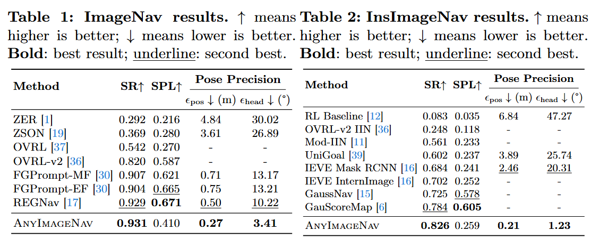

Abstract
Image Goal Navigation (ImageNav) is evaluated by a coarse success criterion, the agent must stop within 1m of the target, which is sufficient for finding objects but falls short for downstream tasks such as grasping that require precise positioning. We introduce AnyImageNav, a training-free system that pushes ImageNav toward this more demanding setting.
Our key insight is that the goal image can be treated as a geometric query: any photo of an object, a hallway, or a room corner can be registered to the agent's observations via dense pixel-level correspondences, enabling recovery of the exact 6-DoF camera pose. Our method realizes this through a semantic-to-geometric cascade: a semantic relevance signal guides exploration and acts as a proximity gate, invoking a 3D multi-view foundation model only when the current view is highly relevant to the goal image; the model then self-certifies its registration in a loop for an accurate recovered pose.
Our method sets state-of-the-art navigation success rates on Gibson (93.1%) and HM3D (82.6%), and achieves pose recovery that prior methods do not provide: a position error of 0.27m and heading error of 3.41° on Gibson, and 0.21m / 1.23° on HM3D, a 5–10x improvement over adapted baselines.
Pipeline

Experiments
